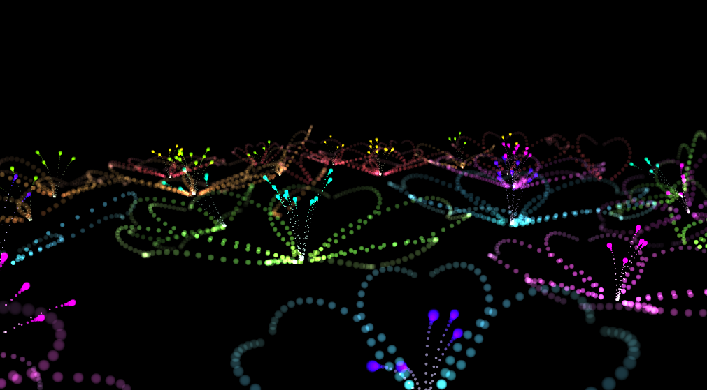

|
|
|
see also http://learningwebgl.com/blog/?p=28 . reference from this.
void main(void) {
float r=min(1.0,dot(vUV.xy,vUV.xy));
r=1.0-r*r;
gl_FragColor = vec4(vColor.xyz,r*vUVz.z);
}
vUV is input from VertexShader.range is -1.0 to +1.0
so easy and texture less. make outline on BSpline
var c1 = [
[0, 3, 10, 30, 42, 45, 40], //x
[0, 0, 5, 10, 15, 12, 10], //y
[0, 0, 12, 20, 15, 5, 0], //z
[-0.05, 0.05, 0.05, 0.0], //h
[0.6, 0.6, 0.5, 0.3], //s
[1.0, 0.7, 0.2], //v
[0.75, 0.75]//size
];
and Z mirror,like the heart
var from = [
[0, 0, 0, 0, 0, 0, 0, 40, 70, -70, -40, 20, 0, 0],
[200, 200, 200, 200, 200, 30, 30, 20, 20, 20, 40, 30, 200, 200],
[-10, -10, -10, -10, -50, -100, -100, -60, 0, 60, 0, -100, -10, -10]
];
var at = [
[0, 0, 10, 60, -60, 0],
[0, 0, 0, 0, 0],
[0, 0, 40, -70, 0]
];
var length = 1500;
var f = (count % length) / length;
mat4.lookAt(vectorBSpline(f, from), vectorBSpline(f, at), [0, 1, 0], view);

FPS calc not work
reference
particle is easy andfun!